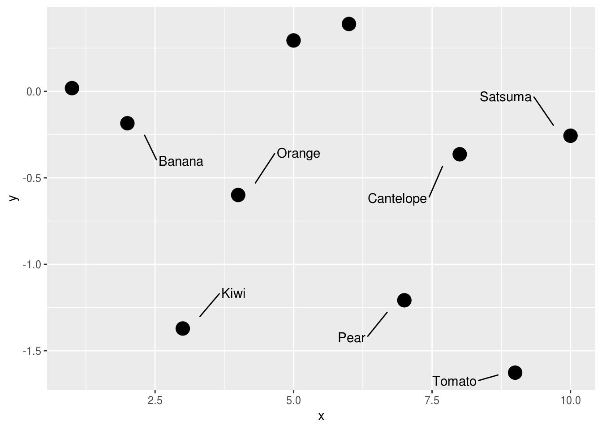

1 dplyr
1.1 case_when()
dplyr::case_when goes really well with geom_text (or ggrepel) for when you want to programmatically label a few of the most interesting features in your plots! And the criteria can be as complex as you want.
set.seed(10)
mydata <-
data.frame(
x = 1:10,
y = rnorm(10),
name = c("Apple", "Banana", "Kiwi", "Orange", "Watermelon", "Grapes",
"Pear", "Cantelope", "Tomato", "Satsuma"),
stringsAsFactors = FALSE
) %>%
mutate(
name_poor = case_when(
y < 0 ~ name,
TRUE ~ ""
)
)
ggplot(mydata, aes(x = x, y = y)) +
geom_point(size = 5) +
geom_text_repel(aes(label = name_poor), point.padding = 2)

(#fig:case_when)Selective labelling
Credit: @rensa_co
1.2 mutate_at()
mutate_at() takes a range of consecutive columns, with var(col1:coln) if you want to batch convert a bunch of columns:
## # A tibble: 150 x 5
## Sepal.Length Sepal.Width Petal.Length Petal.Width Species
## <chr> <chr> <chr> <chr> <fct>
## 1 5.1 3.5 1.4 0.2 setosa
## 2 4.9 3 1.4 0.2 setosa
## 3 4.7 3.2 1.3 0.2 setosa
## 4 4.6 3.1 1.5 0.2 setosa
## 5 5 3.6 1.4 0.2 setosa
## 6 5.4 3.9 1.7 0.4 setosa
## 7 4.6 3.4 1.4 0.3 setosa
## 8 5 3.4 1.5 0.2 setosa
## 9 4.4 2.9 1.4 0.2 setosa
## 10 4.9 3.1 1.5 0.1 setosa
## # ... with 140 more rowsCredit: @vsbuffalo
1.3 mutate_if()
Convert all factor columns to characters.
## # A tibble: 150 x 5
## Sepal.Length Sepal.Width Petal.Length Petal.Width Species
## <dbl> <dbl> <dbl> <dbl> <chr>
## 1 5.1 3.5 1.4 0.2 setosa
## 2 4.9 3 1.4 0.2 setosa
## 3 4.7 3.2 1.3 0.2 setosa
## 4 4.6 3.1 1.5 0.2 setosa
## 5 5 3.6 1.4 0.2 setosa
## 6 5.4 3.9 1.7 0.4 setosa
## 7 4.6 3.4 1.4 0.3 setosa
## 8 5 3.4 1.5 0.2 setosa
## 9 4.4 2.9 1.4 0.2 setosa
## 10 4.9 3.1 1.5 0.1 setosa
## # ... with 140 more rowsCredit: @GojThomson
1.4 summarise_at()
dplyr::summarise_at() applies multiple summary functions to multiple variables!
## # A tibble: 6 x 8
## # Groups: cyl [?]
## cyl am disp_mean hp_mean mpg_mean disp_sd hp_sd mpg_sd
## <dbl> <dbl> <dbl> <dbl> <dbl> <dbl> <dbl> <dbl>
## 1 4 0 136. 84.7 22.9 14.0 19.7 1.45
## 2 4 1 93.6 81.9 28.1 20.5 22.7 4.48
## 3 6 0 205. 115. 19.1 44.7 9.18 1.63
## 4 6 1 155 132. 20.6 8.66 37.5 0.751
## 5 8 0 358. 194. 15.0 71.8 33.4 2.77
## 6 8 1 326 300. 15.4 35.4 50.2 0.566Credit: @thomas_mock